本教程介绍 利用Skyline 靶向质谱环境中的多种特征来创建针对选择反应监测（简称 SRM；亦称为“多重反应监测”，简称 MRM）的靶向分析新目标列表和新仪器方法。使用Skyline从现有离子对列表创建文档的支持参见另外的教程。
在开发 Skyline 的过程中，我们旨在研究创建一个针对靶向质谱的独立于供应方的平台。从所有 Skyline 文档中，您可以导出适合在 Agilent、SCIEX、Shimadzu、Thermo-Scientific 和 Waters 仪器上使用的 SRM离子对列表。Skyline 还可以导出适合在这些仪器上使用的原生方法以及用于并行反应监测 (PRM) 的方法和离子列表。本教程暂不介绍导出 PRM 的方法和离子列表。
从 Skyline 文档导出方法的最大好处之一是用Skyline 进行数据分析时可以确保仪器输出无缝导入。这在其他教程中也有介绍。
了解如何在 Skyline 中创建靶向蛋白质组方法是一个非常重要的起始点；然而，这也是探索本教程的一个重要目的。
开始本教程之前，请先下载下列 ZIP 文件：
https://skyline.ms/tutorials/MethodEdit.zip
将文件解压到您电脑上的某个文件夹，比如：
C:\Users\brendanx\Documents
这将创建一个新文件夹：
C:\Users\brendanx\Documents\MethodEdit
如果您在开始学习本教程之前就一直在用 Skyline，最好将 Skyline 恢复为默认设置。操作如下：

该 Skyline 实例中的文档设置现已重置为默认值。
由于本教程涵盖蛋白质组主题，因此您可以执行以下操作来选择蛋白质组界面：

Skyline 窗口的右上角随之显示蛋白质图标 ，Skyline 将在蛋白质组模式下运行。
，Skyline 将在蛋白质组模式下运行。
您可以用若干方法来开始编辑此空文档，首先您需要提供有关您目标蛋白质的更多信息给 Skyline。提供此类背景信息将有助于Skyline帮助您更快地创建富含信息的方法。
由于您将在本教程中创建的方法旨在测量酵母蛋白质，您将首先根据从在线数据库的肽数据下载的部分酵母数据来创建一个 MS/MS 谱图库。您可以对来自肽数据集的任何数据集进行相同的操作，或者您直接使用由肽数据集供应的全图谱库。Skyline对于3个大型的公共源谱图库都提供支持：
您还可以使用其他公开可用的数据或来自您的实验室实验的肽搜索结果在 Skyline 中创建新谱图库。Skyline 当前支持下列搜索结果格式建库：
如要开始本教程，您可以执行下列步骤，来用Skyline 构建第一个 BiblioSpec 谱图库：
您应当会看到 Skyline 已将新建的 “Yeast (Atlas)” 库添加至肽段设置表单中库选项卡内的库列表中。您可以将构建库作为一项后台任务来执行，这样就可以继续进行手上的工作。如果您查看 Skyline 状态栏，就可以看到建库的进展状态。这是一个小数据集，所以构建过程将会非常快速的完成。在您阅读此信息时，构建过程可能已经完成。 完成后，您会看到 Skyline 窗口左下角升起完成通知。
“库”选项卡现在应显示如下：

您还可以使用 FASTA 序列文件来告知 Skyline 您的实验中将存在的背景基质。在 Skyline 中，这被称为“背景蛋白质组”。它可以根据您的喜好或多或少，例如，针对一个或多个生物体的整个生物体 FASTA，或者只是您打算掺入进空基质的 18 个具体蛋白质，或者两者之间的任何数量。
在此教程中，在单击肽段设置表单中的确定按钮之前，您可以执行下列步骤来使用酵母的完整的 FASTA 文件；
Skyline 将扫描此文件中的 5801 蛋白序列，为肽段序列查找创建索引，并将其保存到所创建的文件中。背景蛋白质组表单应显示如下：

此时将返回肽段设置表单的酶解选项卡，该选项卡现在看起来类似于如下：

Skyline 可提供许多可编辑的列表，正如您刚编辑过的两个列表那样。酶解选项卡顶部的“酶”列表是另一个列表，并且“肽段设置”表单中的每个选项卡上都有其他列表，您可以稍后了解这些列表。
系统随即会提交这些更改并返回主 Skyline 窗口中的文档。
接下来我们可以开始向文档添加蛋白质，以进一步了解新谱图库如何影响 Skyline 做出对肽段和离子对的选择。
将指定的重要蛋白质添加至 Skyline 的首要方法就是直接向文档粘贴蛋白质的全 FASTA 序列文本。如要使用本方法，请执行下列步骤：
执行此操作后，Skyline 应显示如下：

Skyline 随即针对谱图中的紫色肽段突出显示 b 离子。对于 Skyline 选取的要进行监测的肽段，以下是显示其母离子质荷比和子离子质荷比离子对的步骤：
在您选择相应的离子对的过程中，Skyline 将在图中突出显示离子，以呈现如下视图：

通过设置默认值，Skyline 已选择 3 个强度最高的电荷数为 1 的产物 y- 离子作为其将针对电荷数为 2的母离子测量的离子对。然而，所有这些设置都可以被调整。需要更改设置的默认值时，请执行如下步骤：
离子对设置表单现在应显示如下：

离子对设置表单现在应显示如下：

Skyline 文档树应更新为如下所示：

Skyline 已针对 VDIIANDQGNR 肽段添加排名 4 和排名 5 离子，包括 b 离子。新肽段如 YAL005C 蛋白质中的第一个肽段一样被添加至蛋白质。展开后，可以看到该肽段的新谱图库仅包含一个电荷数为 3 的肽段谱图匹配，同时库中明显不含有电荷数为 3 的 VDIIANDQGNR 肽段谱图。库肽段设置仍将指导 Skyline 仅选择与那些谱图库中谱图的匹配母离子。您可以扩展 LIDVDGKPQIQVEFK 肽段，以查看电荷数为 2 和电荷数为 3 的谱图在谱图库中的肽段示例。
示例新谱图库包含许多针对 YAL005C 蛋白质的匹配，但由于其构建于非常小的数据集，许多蛋白质根本不显示肽段。然而，Skyline 不仅限于使用单一的谱图库。举例来说，您可以针对 GPM 中的“酵母”蛋白质来添加公共可用的库。NIST 的酵母库范围更广，但本教程选择了较小的 GPM 库。如要添加包含在此教程 ZIP 文件中的 GPM 库，请执行下列步骤：
“肽段设置”表单现在应显示如下：

由于 Skyline 只能选择单一的谱图来选择其子离子，并且“按下列内容排列肽”中字段保持为空白，因此这些库将按其在列表中出现的顺序被依次搜索。Skyline 将使用其发现的第一个谱图匹配来选择离子对。要在操作中查看此项：
加载库后，Skyline 更新文档，从而包含大量新肽段。对于那些在GPM 库被添加之前已经存在的肽段和母离子，您可以看到谱图标题仍然将谱图归于 “Yeast (Atlas)” 库。新肽段和母离子的谱图则一律在标题中显示为“酵母 (GPM)”。
注释：GPM 库不同于其他所有格式，它仅储存 20 个强度最高的 MS/MS 峰值。您当然可以对储存的谱图和所声称的谱图在多大程度上匹配做出自己的判断，但您应首先充分了解相较于其他库中未过滤的谱图，为何 GPM 库只显示如此少的峰值，然后再依愿行事。
部分肽段现在拥有大量可以测量的母离子。您也许需要在开始优化方法前测量全部前体。优化方法参见其他教程。在本教程中，我们假设您想要以某种方式来限制每个蛋白质测量的肽段数目。
今后，我们希望向 Skyline 添加预测算法，将无需实验数据即可实现此类肽段的排序与选择。然而在目前，限制每个蛋白质的肽段而无需依靠自身手动拣选肽段的唯一方法就是使用由谱图库提供的排序值。遗憾的是，本教程中创建的 BiblioSpec 库和来自 GPM 的公共库并不共享可比较（而产生排序值）的分数。这表明您将需要取消核选一个库，以使用排序分数。
执行下列步骤，以限制当前文档中每个蛋白质的肽段：
您现在拥有的肽段数目应该少了很多。您现在还可以消除空蛋白质：
现在，教程返回了您所创建的背景蛋白质组文件，它还可以用于在您编辑文档时向您正在针对的肽和蛋白质添加信息。
假设您在处理一列蛋白质。您可能已经有了用于识别 FASTA 文件中蛋白质的 ID，但您不想浏览 FASTA 文件来逐一粘贴每个序列。此时，鉴于您已经建立一个背景蛋白质组， Skyline仅需要您用于创建背景蛋白质组的 FASTA 文件中的以行分隔的全部蛋白质 的ID 列表。
如要向当前文档添加所需的新蛋白质列表，请执行下列步骤：
Skyline 向蛋白质列表网格添加蛋白质列表，并且在背景蛋白质组中分配针对 ID 发现的描述和序列。由于背景蛋白质组缺少登录号、首选名称、基因和物种信息，因此这些列将为空列。要查看更多蛋白质序列，请执行以下操作：
表单将显示为这样：
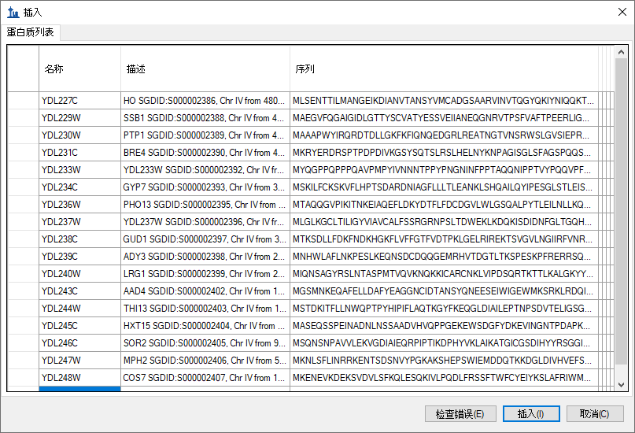
这些蛋白质将添加到文档末端。许多蛋白质在 GPM 库中没有肽段匹配谱图，因此请根据这些步骤删除空蛋白质：
向 Skyline 文档插入肽段列表的方式有两种，其结果如下：
如要实现第一个结果，请执行下列步骤：
Skyline 将完整的肽段列表加入文档中单个全新的肽列表元素，名为“肽段 1”。您现在可以输入您喜欢的名称，对此列表重新命名。
GPM 库拥有所添加的全部肽段的谱图，您可以按向下箭头键来选择粘贴的每个肽段，从而查看这些谱图。Skyline 文档现在应显示如下：
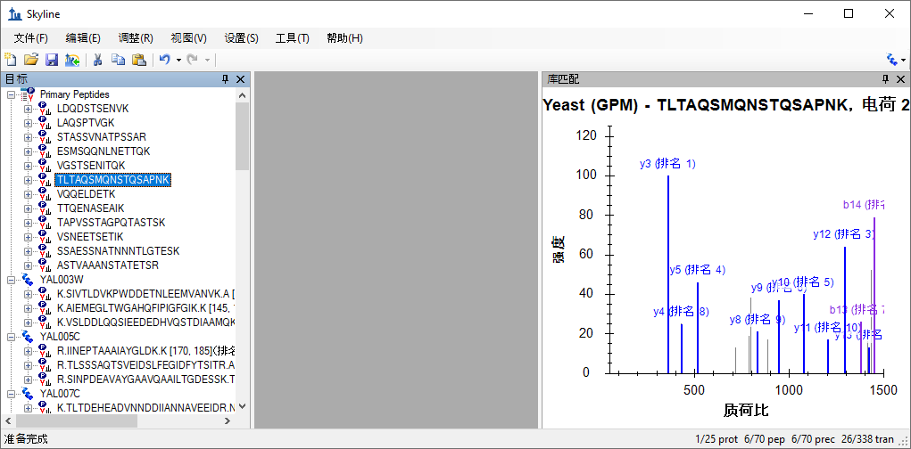
如要插入相同的列表，以便每个肽都与背景蛋白质组中各自的蛋白质相关，您需要使用插入肽段列表分类。请执行下列步骤来操作：
Skyline 会为每个肽段填充蛋白质字段，填充后的表单应如下所示：
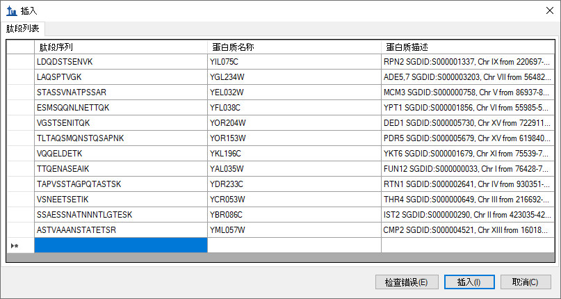
肽段已通过名称添加到蛋白质中，而不是像以前一样添加到单个肽段列表中。
此时您已向文档添加 70 个肽段，除了要求 GPM 酵母库中每个肽段包含一个谱图以外，您并没有采取任何额外的确认措施。如要查看本文档中尝试测量的肽段在谱图库中的谱图是否极差，请执行下列操作：
此谱图仅显示 1 个匹配的 y- 离子和 1 个匹配的 b- 离子，并且看起来类似于如下：
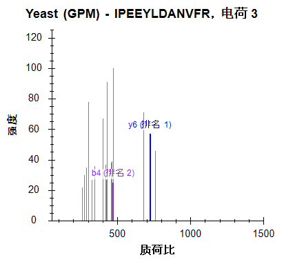
测量这两个离子不太可能获得有关此肽段的有用信息。
对于没有提供所需要的 5 个子离子的库谱图，如要删除其所有肽段，请执行以下步骤：
Skyline 窗口右下角的状态栏指示器显示出肽段数目已从 70 减少到 64：
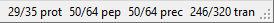
您想要查看的另一信息就是已选择的肽段是否是您尝试测量的蛋白质所特有的。遗憾的是，我们已发现 FASTA 序列文件经常是冗余的，简单地删除背景蛋白质组中非单一序列所特有的所有肽段并不明智。比如许多肽段属于单一基因模式的多个蛋白质同系物。
然而，Skyline 针对文档中每个蛋白质的肽段独特性提供表单。执行下列步骤，以检查您正在编辑的文档中的最后 2 个蛋白质：
Skyline 随即在序列特异的肽段表单中显示如下信息：
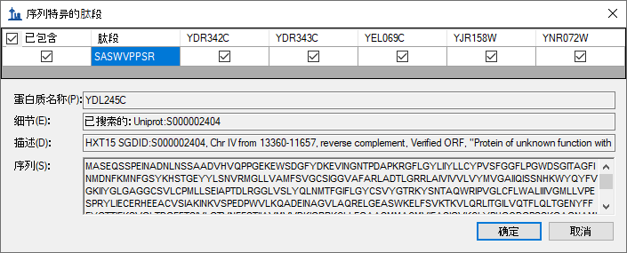
对这 6 个蛋白质的详细检查显示它们相互间非常相似，但当然还是存在微弱的却是足够的差异，可以通过测量某一肽段实现对目标蛋白质可能的区分性测量。您可以在网格视图中选择蛋白质序列所在的列，从而查看每个蛋白质的序列。
Skyline 显示出针对此蛋白质选择的一个肽段也存在于多个蛋白质，在本示例中为 4 个蛋白质，但它们之间更为相似。您可能想要保留这一个。
注意：自初次编写本教程后，在肽段设置 - 酶解选项卡中的背景蛋白质组字段下方添加了用于实施肽段独特性的设置。它的标签是肽段独特性的实施方式。您或许想了解该设置对本文档中选择的肽段有何影响。
您已经看到，您可以使用删除键来删除文档中的项目，还可以通过在现有名称上输入的方式来更改肽段的名称。在本部分中，我们还将再向您介绍一些直接的文档编辑特征，这些特征可以让您快速地修改您想要测量的蛋白质、肽段、母离子和子离子。
借助已定义的背景蛋白质组，您可以通过在文档末端的空白元素上输入的方式实现添加蛋白质和肽段方面的功能。如要按名称添加蛋白质，请执行下列操作：
Skyline 将如下所示添加蛋白质，从而完成此目的。
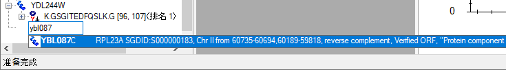
Skyline 还将从 FASTA 文件中搜索针对蛋白质序列的描述文本。如要基于描述查找并添加蛋白质，请执行下列操作：
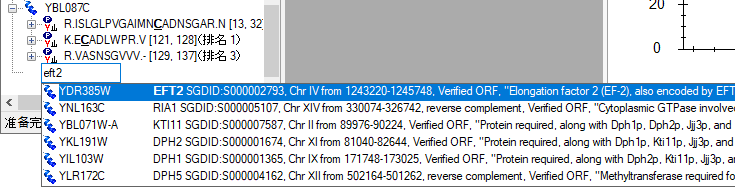
第三个自动完成选项是开始输入一个肽段序列，然后 Skyline 将帮助鉴定肽段及包含肽段的蛋白质。如要按序列查找并添加肽段，请执行下列操作：
肽段已添加至文档，但它被添加至现有蛋白质 YDR385W 中，就在最终的空白要素之上。已添加的蛋白质应看起来如此：
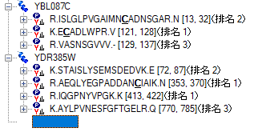
在您向文档添加蛋白质后，您还可以使用 Skyline 弹出式选择列表来修改您将定为目标的肽段、母离子和子离子。您可以执行下列操作，以向 YBL087C 蛋白质添加另一个肽段：
Skyline 将显示经过初始过滤的弹出式选择列表，并且仅显示已添加至文档的肽段集。您可以取消核选以上任何肽段，效果将与使用删除键从此蛋白质中删除肽段相同。反之，您可以通过下列操作来添加新的肽段：
这样选择列表应如下显示：
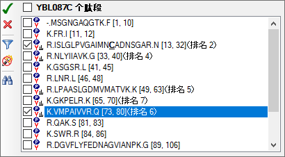
文档中支持子列表的所有项都将显示同类的选择列表。如要改变某个肽段母离子的子离子对，请执行下列操作：
假设您有理由相信该特定母离子仅使用 b-离子会得到更好的测量，并且实际上您希望将当前的 2 个 y- 离子交换成 2 个双电荷 b- 离子。若要这样做，请执行下列步骤：
选择列表现在应如下所示：
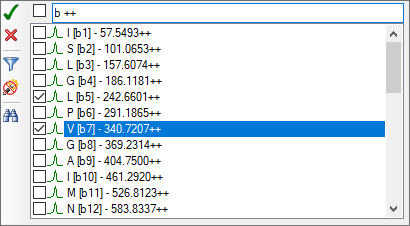
有时，它有助于您在更宽广的上下文环境中查看您的文档中的信息。在您将鼠标光标移向文档时，您可能已经注意到上述这点，但如果您没有注意到，现在请将鼠标光标停留在文档树的部分元素上方，同时 Skyline 将显示出类似下述内容的数据提示。在这些提示中，选定的元素以红色突出显示，文档中的元素以蓝色显示，粗体用于标示满足过滤条件但却未纳入文档的元素。
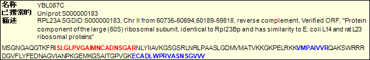
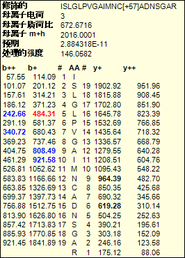
最后，您还可以使用拖放功能来重新排序文档中的部分元素。在您针对本教程创建的文档中，只有蛋白质本身才可能被重新排序。其他元素具有固有顺序，无法移动。然而，如果您直接向文档粘贴列表从而创建出了不含任何蛋白质信息的肽段列表，那么您还可以使用拖放功能在此列表中重新排序肽段。
当然，所有这些文档编辑的最终目标就是根据肽段试图建立用于质谱仪的测量文件。但是，您首先需要决定使用哪个质谱仪。Skyline 针对以下五家制造商的三重四级杆仪器导出离子对列表：Agilent、SCIEX、Shimadzu、Thermo Scientific 和 Waters。现在它还可以针对所有这些项目导出原生方法文件，但有些需要仪器软件，并且所有项目都需要方法模板。
在此教程中，您针对 SCIEX Q Trap 质谱仪仅导出一个离子对列表。操作前，您应更改一些设置。如要令您的文档为导出 Q Trap 离子对列表做好准备，请执行下列操作：
在导出您的第一个离子对列表前，首先通过下列操作将您的文档保存至 MethodEdit 文件夹。
然后，您应注意到本教程中创建的文档包含 355 个离子对。如果您已经精确测量了这些肽段何时将在色谱柱上洗脱，则您可以安排每个肽段都在很小的时间范围内进行测量，这样或许可以只用一种方法就可以安排测量所有这些肽段。如果您还没有这些测量数据，那么首先需要测量整个色谱梯度，将测量分为多个小组，在整个梯度中测量。仪器的速度和灵敏度不同，所要使用的离子对数量也会有所不同。对于现代三重四极杆仪器，此数值可能为几百，但本教程最初是针对 SCIEX 4000 Q Trap 编写的，测量 75个离子对是适当的做法。
有了此类信息，您就已准备好针对 SCIEX 4000 Q Trap 质谱仪导出离子对列表。如要实现此目的，请执行下列步骤：
执行此操作后，“导出离子对列表”表单应显示如下：
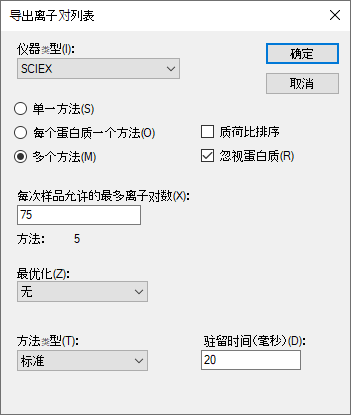
切换至 Windows Explorer 窗口并导航至 MethodEdit 文件夹，以查看您刚刚创建的离子对列表。MethodEdit 文件夹中的内容现在应看起来如下所示：

打开五个新文件中的第一个，会看到第一个离子对列表显示如下：
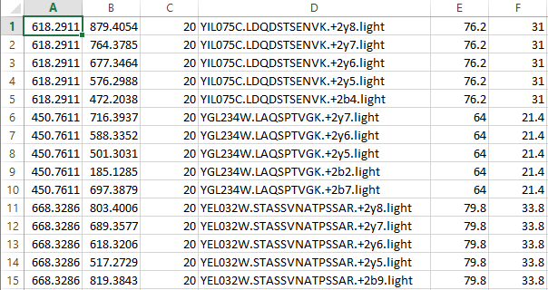
各列顺序如下：母离子质荷比、子离子质荷比、质谱驻留时间、扩展的肽段标识、去簇电压和碰撞能量。这些内容应该足够粘贴到 Analyst 软件方法创建用户界面，并且创建一种可用于在酵母样品上运行仪器的方法，以尝试靶向测量这些肽段。
关于将 Skyline 应用程序用于您的靶向蛋白质组实验，我们要学习的内容当然还有很多。尽管如此，您应该足够自信地可以开始创建您自己的 Skyline 文档。希望这些文件将有助于您做好准备，可以以前所未有的速度快速测量目标肽段以测试新假设。然后您会希望将自己的仪器输出文件重新导入 Skyline，以用于峰值整合及结果分析。我们认为您将发现您在 Skyline 文档中创建的内容会极大地简化您对仪器输出的理解。关于如何执行之后的其他步骤，您可以在 Skyline 网站上的其他教程中找到。